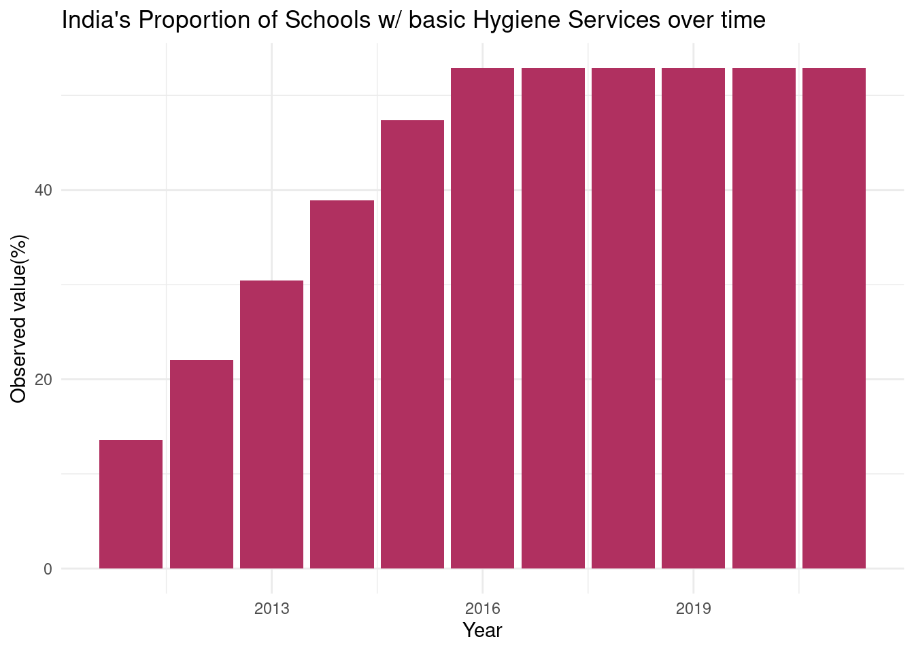
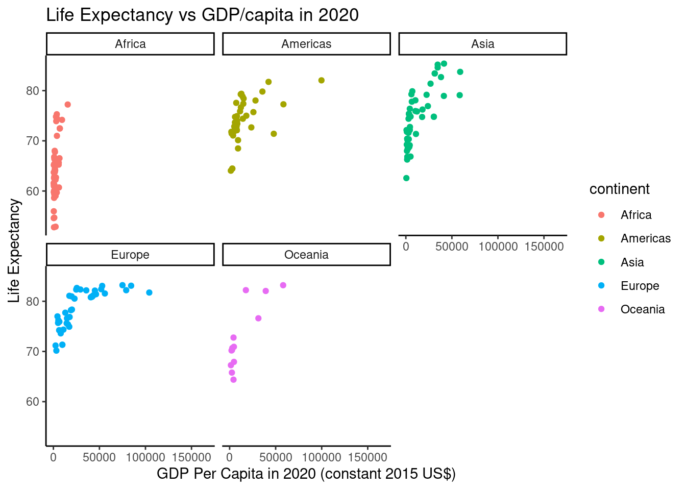

DA&V Assignment 2
MSc. Management (Strategy)
These visualisations are made for ‘Assignment 2’ of the Data Analytics and Visualisations course at DCU for my Masters degree. Data is adopted from UNICEF.
The primary indicator used is:
Proportion of Schools With Basic Hygiene Services
This is defined as the percentage of schools with handwashing facilities with water and soap available.
There are 5 visualisations included in this document:
- World Map Chart
- Bar Chart
- Scatter Plot (Split b/w Continents)
- Scatter Plot (With Regression Line)
- Time Series Plot
World Map Chart
The diagram below takes into account the % of schools globally with access to basic hygiene services in 2020.
A higher percentage can be noted for developed countries vs. developing countries.
The lighter the blue, the higher the proportion of schools with access to basic hygiene services. A general trend can be noted, where developed countries (towards the North) are lighter compared to developing countries (South Asia and Africa). The South East is an exception with the likes of Australia and New Zealand etcetera, all of which are categorised as developed countries.
Bar Chart
The diagram below highlights India’s efforts to improve access to basic hygiene services in Schools.

There is a steady increase in the number of schools over the years, however, growth stops after 2016 at about 50%. The Indian government should continue their efforts in ensuring all students have access to basic hygiene services.
Scatter Plot
Split b/w Continents
The diagram below provides an extensive insight as to the relationship between life expectancy and GDP in each continent. This is an important illustration as a lower GDP generally results in less spending on education, infrastructure and health, which may in turn result in more diseases and illnesses being spread through schools.

With reference to the world map chart, we note that continents that house developing countries have a lower life expectany than continents that include developed countries, for example, Africa vs. Europe.
Scatter Plot
With Regression Line
This scatter plot takes into account 5 regions:
- Africa
- Americas
- Asia
- Europe
- Oceania
This diagram makes use of regression lines to show a key trend: Higher GDP results in longer life expectancy. For example, as the GDP per capita in Europe goes up, so does the life expectany.
We also see that in Africa, for example, a slight increase in GDP results in a massive increase in life expectancy. This means that even small investments in developing regions can have large impacts on the quality of life.
Time series Plot
The time series plot again looks at India. The same pattern is seen as the Bar Chart.
There is a gradual increase in the proportion of basic hygiene services at schools, however, the level stops increasing after 2016 and remains stagnant thereafter.
The aim of these illustrations was to highlight the disparity in access to basic hygiene services in developing and developed countries. Overall, there seems to be less investment in this sector (educational infrastructure) in developing countries than developed countries. This is due to the fact that developing countries have more pressing issues to cater to, and access to handwash and water at schools may not be a top priority for governments.
This assignment has made use of:
- R code
- Data Transformations
- GGPLOT
- Markdown Styles
Thanks!